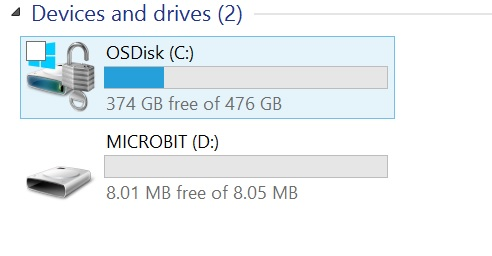
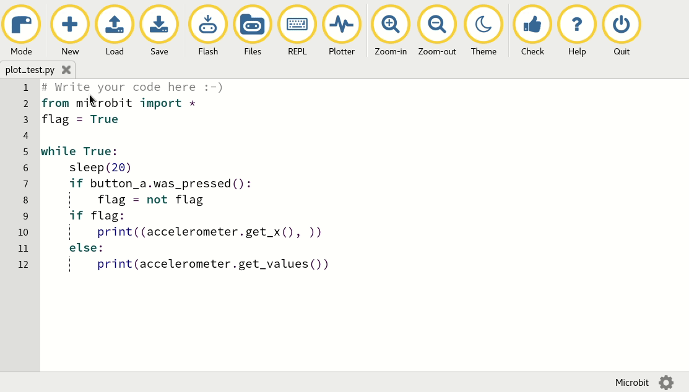
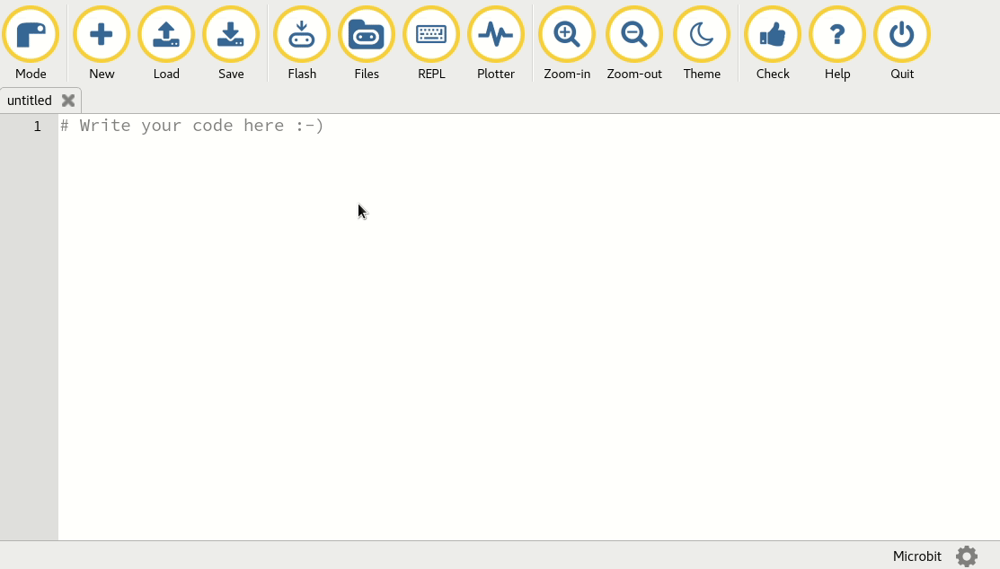
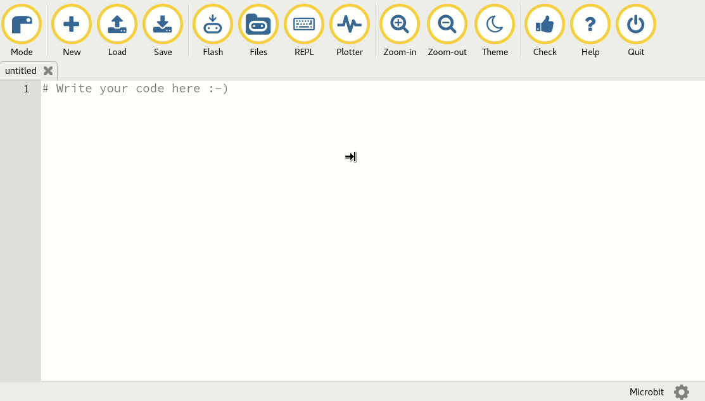
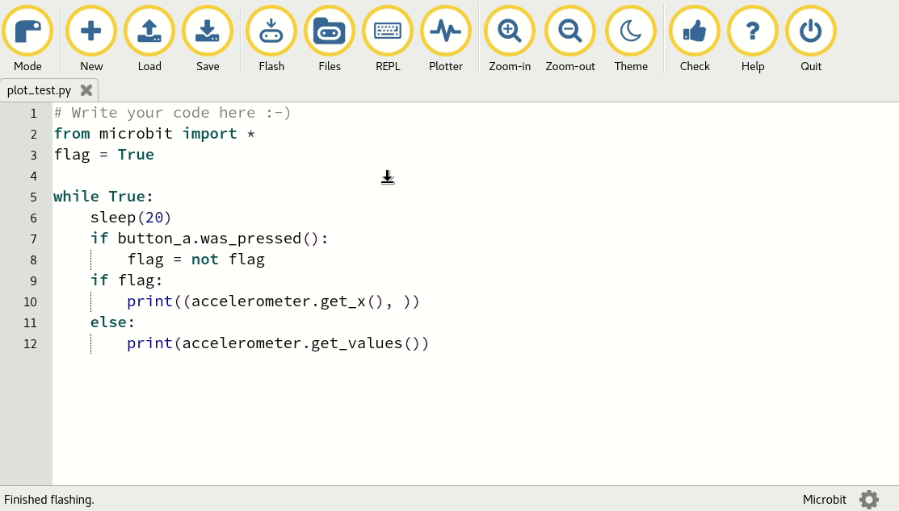

Ce document est inspiré des travaux d’Eric Morlaix et de la documentation officielle du bbc:microbit
L’objectif est de vous initier à ce cet ordinateur à carte unique.

Qu’est-ce ? #
BBC micro:bit est une carte à microcontroleur facile d’accès et disposant de nombreuses entrées et sorties : 25 leds rouges, deux boutons programmables, des capteurs de mouvement, de température, de luminosité, d’orientation etc.
Il dispose aussi d’une connexion radio (Bluetooth) permettant de le faire communiquer avec d’autres appareils (d’autres Micro:bit par exemple, mais pas que…).
D’où vient le projet ? #
Le premier projet était le BBC micro et il remonte au début des années 80. Il avait pour ambition de proposer un ordinateur accessible aux enfants. La BBC a repris ce concept et a produit le micro:bit. Il a été distribué à tous les écoliers britaniques de 12 ans et ils ont développé des jeux et applications à l’aide d’un langage par bloc (comme Scratch).
Qu’allons-nous en faire ? #
Nous allons d’abord faire un tour d’horizon des fonctions du Micro:bit puis allons les étendres à d’autres capteurs et actuateurs conçus par Grove.
D’où vient le matériel dont nous disposons ? #
Il a été offert au lycée par la fondation Cgenial dans le cadre du projet “Yes, We code!”.
Vous pourrez consulter par exemple les vidéos des projets réalisés par des collégiens.
Prise en main du BBC:Micro bit. #
Alimenter, raccorder à l’ordinateur #

A faire 1 #
Branchez le câble micro-usb dans un port USB de la machine et au micro:bit.
Vous devriez le voir apparaître dans l’explorateur windows.

Hello World avec l’éditeur en ligne
#
Nous allons d’abord utiliser l’éditeur en ligne.

Un code par défaut (hello world) est proposé.
Cliquez sur Download pour télécharger un fichier microbit.hex.
Ce fichier contient le code qui sera exécuté par le micro:bit.
Déplacez depuis le dossier Téléchargements vers E:\MICROBIT

Une LED jaune au dos du Micro:bit doit clignotter puis rester fixe et vous
devriez voir défiler Hello, World! sur la matrice de LEDS.
Il se peut que vous deviez le réinitialiser à l’aide du bouton reset situé
au dos.
Cette démarche n’est pas la seule approche pour déployer un programme sur le Micro:bit, nous en verrons deux autres.
A faire 2 #
Adapter le programme et modifer le texte.
Transférer avec l’interface #
L’interface permet de connecter un micro:bit (bouton connect) puis de charger directement un programme. Cela évite d’avoir à transférer le fichier à la main.
A faire 3 #
- Dans la boucle ajoutez un
print("bonjour") - Modifiez le texte et recommencez depuis l’interface.
- Appuyez sur le bouton
Open Serial, vous devriez pouvoir raccorder le micro:bit et accéder à un terminal et voir vosprint("bonjour")apparaître.
Hello, World! avec l’éditeur Mu
#
L’éditeur Mu devrait être installé sur tous vos postes. Ouvrez le
et assurez-vous qu’il est en mode “bbc:microbit”

Une fois le micro:bit raccordé, le bouton Flash permet d’y transférer
le programme.
Que faire en cas d’erreur ? #
Il est plus difficile de programmer sur un microcontroleur car il ne dispose généralement pas d’écran. C’est pourquoi un message d’erreur défile toujours sur la matrice de LEDs en cas d’erreur dans le programme.
Consultez le, essayez d’utiliser le shell (bouton repl dans mu editor).
Avantages de mu editor sur l’éditeur en ligne. #
L’un comme l’autres permettent de réaliser tous les programmes que nous allons traiter aujourd’hui.
Néanmoins mu editor est meilleur :
- Il permet de manipuler les fichiers présents sur le microcontroleur
- Il permet de tracer directement les données en temps réel.
Manipuler les fichiers #
Le bouton fichier s’utilise comme ceci :

Cette fonction n’est accesible qu’après avoir chargé un fichier sur la carte.
Terminal dans mu editor #
L’usage est similaire à celui de l’éditeur en ligne.

Traceur dans mu editor #
Accessible avec le bout plot :

A faire 4 #
- Reprenez le code de l’animation précédente et testez le.
- Que fait-il ?
Utiliser le micro bit depuis l’interface série. #
Il est possible (avec PuTTY, présent sur vos postes) d’accéder directement au micro:bit depuis un terminal.
Nous ne le ferons pas, nous en avons assez.
Voici néanmoins la démarche à suivre.
Sur un PC Windows 10, faire un clic droit sur le menu démarrer et choisir Gestionnaire de périphériques, dérouler la liste des Ports (COM et LPT), brancher et/ou débrancher le BBC micro:bit pour repérer sur quel numéro de COM est connectée votre carte.

Dans le dossier informatique, vous trouverez PuTTY qui permet de se connecter à un terminal distant (ssh, port série etc.)
Choisir une connection de type Serial (Série), saisir le numéro du port COM de vore carte et régler la vitesse de communication à 115200 bauds (bits/seconde) puis cliquer sur le bouton Open pour ouvrir la connection et établir la communication entre le PC et le BBC micro:bit.

Un fenêtre de terminal s’ouvre. Après avoir appuyé sur la touche Entréede votre clavier, Les trois chevrons »> d’un interpréteur python doivent apparaitre :

Saisir alors quelques instructions en Python, et d’autre en microPython de la bibliothèque microbit.
Ces instructions sont exécutées sur le micro:bit.
Testez une fonction comme celle-ci, n’hésitez pas à abuser de l’auto complétion.
def ma_fonction():
while True:
if button_a.is_pressed():
display.show(Image.HAPPY)
elif button_b.is_pressed():
break
else:
display.show(Image.SAD)
display.clear()
Exécutez la et vous devriez pouvoir faire alterner les images avec le bouton a, arrêter le programme avec le bouton b.
Utilisez un émulateur #
Il existe un émulateur en ligne qui permet de tester toutes les fonctions de base.
Il est disponible ici.
Collez un programme pour micro:bit et exécutez le :
from microbit import *
while True:
display.scroll('Hello, World!')
display.show(Image.HEART)
sleep(2000)
Les fonctions du micro:bit #
À partir d’ici je n’indique plus quelle démarche réaliser.
Toutes celles présentées plus haut conduisent au même résultat, choisissez celle qui vous convient.
Afficheur : la matrice de 5x5 LEDs. #
Dans un premier temps nous allons contrôler les LEDs individuellement.
A faire 5 #
- Testez le programme suivant :
while True:
display.set_pixel(2, 2, 9)
sleep(500)
display.set_pixel(2, 2, 0)
sleep(500)
if button_b.is_pressed():
display.scroll("kenavo")
break
-
Adaptez le afin de changer de LED, d’en faire varier l’intensité.
-
Essayez de dessiner votre initiale.
-
Dans un terminal (sur le micro:bit, je préfère préciser), affichez de l’aide :
>>> help(display)
>>> dir(display)
>>> help(display.set_pixel)
Modifier le programme précédent pour faire clignoter la LED du coin suppérieur gauche de la matrice (Guide pour matrice à LED).
- Introduisons un peu d’aléatoire avec le module
random
Documentez-vous sur la fonction random.randint
Adaptez le programme afin d’allumer une LED aléatoire à chaque seconde avant de l’éteindre pour un allumer une autre.
Maintenant, la classe image de le.
A faire 6 #
- Dans un shell :
help(Image)
dir(Image)
- Testes le programme suivant :
monImage = Image(
'33333:'
'36663:'
'36963:'
'36663:'
'33333:')
display.show(monImage)
- Laissez parler votre créativité !
Quelques références :
- https://microbit-micropython.readthedocs.io/fr/latest/tutorials/images.html
- http://www.multiwingspan.co.uk/micro.php?page=pyled
- https://microbit-micropython.readthedocs.io/en/v1.0.1/image.html
- https://microbit-micropython.readthedocs.io/en/v1.0.1/display.html
Actuateurs : Les boutons #

La carte BBC micro:bit dispose, sur sa face avant, de deux boutons poussoir repérés par les lettres A et B.
Nous avons précédemmment utilisé les fonctions button_a.is_pressed() et button_b.is_pressed().
Exécuter les instructions suivantes pour découvrir plus avant la classe button :
>>> help(button_a)
>>> dir(button_a)
Nous nous en sommes déjà servi et je ne reviens pas dessus.
Un mini projet consisterait à créer un jeu de reflexe :
Voici le déroulé d’une partie :
Tant que les deux boutons a et b ne sont pas pressés, faire :
attendre un nombre aléatoire de secondes (entre 1 et 3)
relever le temps
afficher toutes les leds en intensité maximale
dès que l'utilisateur appuie sur le bouton a,
relever à nouveau le temps
éteindre les LEDs
si l'utilisateur a mis moins de 0.2 secondes,
dessineur un coeur
sinon:
dessiner une tête de mort.
Un autre exemple tout fait :
Compteur de pressions #
from microbit import *
while True:
sleep(3000)
count = button_a.get_presses()
display.scroll(str(count))
Actuateurs les touches 0, 1, 2 #
Les 25 connecteurs cuivrée de la tranche du micro:bit est programmable en entrée et sortie. Pour en tirer pleinement partie il faut disposer de matériel supplémentaire (ce sera pour la prochaine séance).
Vous pouvez consulter ici leurs fonctions.
En attendant, les boutons 0, 1 et 2 sont sensibles au toucher.
from microbit import *
nombreDeTouches = 0
while True:
if pin0.is_touched():
nombre_de_touches += 1
display.scroll(str(nombre_de_touches))
elif button_b.is_pressed():
display.scroll("NSI <3")
break
A faire 7 #
Dans ce code, expliquer ce qu’est nombre_de_touches et ce que font
l’opérateur += et la fonction str() :
nombre_de_touchesest…+=sert à…str()permet de…
A faire 8 : l’éclairage par va et vient. #
Je pense que vous connaissez le principe : deux interrupteurs à l’opposé d’un long couloir et une seule ampoule.
- lumière éteinte, on appuie le sur le premier, la lumière s’éclaire.
- on franchit le couloir en tout sécurité,
- lumière allumée, on appuie sur le second et la lumière s’éteind.
Lorsqu’on franchement le couloir dans l’autre sens, tout fonctionne de la même manière.
Il est possible avec deux boutons de programmer un tel interrupteur.
Notre sortie sera une image de l’affichage LEDs.
Petit rappel sur les tables de vérité du ET, du OU et du NON logiques :
- Compléter alors la table de véritée de la fonction logique ET, d’équation $A\cdot B$ :
| A | B | ET |
|---|---|---|
| 0 | 0 | 0 |
| 0 | 1 | 0 |
| 1 | 0 | |
| 1 | 1 |
En python, le ET logique est un and
Application :
while True:
if button_a.is_pressed() and button_b.is_pressed():
display.show(Image.YES)
else:
display.show(Image.NO)
display.clear()
- Compléter alors la table de véritée de la fonction logique OU, d’équation $A + B$ :
| A | B | OU |
|---|---|---|
| 0 | 0 | 0 |
| 0 | 1 | 1 |
| 1 | 0 | |
| 1 | 1 |
En python, le OU logique est un or
- Compléter alors la table de véritée de la fonction logique NON, d’équation $\bar{A}$ :
| A | NON |
|---|---|
| 0 | 1 |
| 1 |
- Compléter la table de vérité suivante :
Compléter la table de vérité et programmer le fonctionnement d’un éclairage par va et vient dont l’équation serait :
$$L =\bar{A}\cdot B+A\cdot\bar{B}$$
| A | B | L |
|---|---|---|
| 0 | 0 | |
| 0 | 1 | |
| 1 | 0 | |
| 1 | 1 |
Programmez un interrupteur à va et vient en vous inspirant du programme du début de l’exercice
Plus d’informations sur les boutons et les touches :
- https://microbit-micropython.readthedocs.io/fr/latest/tutorials/buttons.html
- http://www.multiwingspan.co.uk/micro.php?page=pybutton
- https://microbit-micropython.readthedocs.io/en/v1.0.1/button.html
- https://microbit-micropython.readthedocs.io/fr/latest/tutorials/io.html
- http://www.multiwingspan.co.uk/micro.php?page=pytouch
- https://microbit-micropython.readthedocs.io/en/v1.0.1/pin.html
Accéléromètre #
Il mesure l’accélération selon trois axes $(x, y, z)$ :

Les valeurs enregistrées vont de $-2g$ à $2g$ ($g$ étant l’accélération de pensanteur à la surface de la terre) et les valeurs renvoyées vont de 0 à 1024.
Le micro:bit mesure le mouvement selon trois axes :
- X - déplacement de gauche à droite
- Y - déplacement vers l’avant et l’arrière.
- Z - déplacement de haut en bas.
La mesure pour chaque axe est un nombre positif ou négatif indiquant une valeur en milli-g. Lorsque la lecture est de 0, vous êtes «de niveau» le long de cet axe particulier.
Vous pouvez accéder aux mesures d’accélération une par une ou obtenir les trois valeurs à la fois et les stocker dans une liste. Vous pouvez en savoir plus sur les listes dans la section Bases de la programmation, mais pour l’instant, utilisez simplement le code suivant:
from microbit import *
while True:
x = accelerometer.get_x()
y = accelerometer.get_y()
z = accelerometer.get_z()
print("x, y, z:", x, y, z)
sleep(500)
A faire 9 #
Téléchargez ceci et ouvrez le moniteur série. Tenez le micro: bit à plat avec les LED vers le haut. Vous devriez voir que les accélérations X et Y sont proches de zéro et que l’accélération Z est proche de -1024. Cela vous indique que la gravité agit vers le bas par rapport au micro: bit. Retournez la carte pour que les LED soient les plus proches du sol. La valeur Z doit devenir positive à +1024 milli-g. Si vous secouez assez vigoureusement (l’ensemble coûte 80€) le micro: bit, vous verrez que les accélérations vont jusqu’à ± 2048 milli-g. C’est parce que cet accéléromètre est réglé pour mesurer un maximum de ± 2048 milli-g: le vrai nombre peut être supérieur à cela.
Si vous vous êtes déjà demandé comment un téléphone mobile sait dans quelle direction orienter son écran, c’est parce qu’il utilise un accéléromètre exactement de la même manière que le programme ci-dessus. Les contrôleurs de jeu contiennent également des accéléromètres pour permettre la direction.
Gestes #
L’effet secondaire vraiment intéressant d’avoir un accéléromètre est la détection des gestes. Si vous déplacez votre BBC micro: bit d’une certaine manière (comme un geste), alors micro: bit est capable de le détecter.
micro: bits est capable de reconnaître les gestes suivants: up, down, left,
right. Les gestes sont toujours représentés sous forme de
chaînes.
Testez le programme suivant :
from microbit import *
while True:
gesture = accelerometer.current_gesture()
if gesture == "face up":
display.show(Image.HAPPY)
else:
display.show(Image.ANGRY)
A faire 10 #
Programmez les réactions suivantes :
- Affichez les caractères “L” ou “R” selon que le BBC micro: bit est incliné vers la gauche ou vers la droite.
- Allumez les LED lorsque l’amplitude de l’accélération est supérieure à 1024 milli-gs.
- Secouez le micro: bit pour que les LED s’allument.
La boussole #
Un magnétomètre mesure l’intensité du champ magnétique dans chacun des trois axes. Il peut être utilisé pour créer une boussole numérique ou pour explorer des champs magnétiques, tels que ceux générés par un aimant permanent ou ceux autour d’une bobine traversée par un courant.

L’interprétation de l’intensité du champ magnétique n’est pas facile. Le pilote du magnétomètre renvoie des valeurs brutes.
Nous n’allons pas utiliser la boussole mais un projet intéressant est d’indiquer le nord.
Cela demande un peu de maths et ce n’est pas notre objectif.
Attention, la fonction compasse_calibrate doit être exécutée avant chaque
usage et elle prend un peu de temps.
from microbit import *
compass.calibrate()
while True:
x = compass.get_x()
y = compass.get_y()
print("x reading: ", x, ", y reading: ", y)
sleep(500)
Thermomètre #
Le thermomètre du micro: bit est intégré dans l’une des puces - et les puces chauffent lorsqu’elles sont sous tension. Par conséquent, il ne mesure pas la température ambiante de manière très précise. La puce utilisée pour mesurer la température se trouve sur le côté gauche de l’arrière du micro: bit:

Il n’y a qu’une seule fonction de base pour le thermomètre - pour obtenir la température, qui est renvoyée sous forme d’entier en degrés Celsius:
from microbit import *
while True:
temp = temperature()
display.scroll(str(temp) + 'C')
sleep(500)
La température mesurée par le thermomètre sera généralement supérieure à la température réelle, car elle est chauffée à la fois par la pièce et par l’électronique de la carte. Si nous savons que la température est de 27 ° C mais que le micro: bit indique systématiquement des températures qui sont, disons, 3 degrés plus élevées, alors nous pouvons corriger la lecture. Pour ce faire avec précision, vous devez connaître la température réelle sans utiliser le micro: bit. Nous n’avons pas de thermometre précis à disposition donc nous ne le ferons pas.
A faire 11 #
- Faire changer le modèle des LED lorsque la température change.
Programmez un affichage des LEDs selon la valeur de la température. On doit voir l’intensité des LEDs augmenter lorsque vous touchez le capteur.
- Adapter votre programme pour faire varier l’intensité ET le nombre de LEDs allumées.
Jouer des sons #
Le micro:bit peut jouer des sons, nous le ferons dans le TP suivant, donc je ne détaille pas… d’autant qu’il faut se brancher à des écouteurs à l’aide de pince crocodiles et qu’on ne contrôle pas le volume sonore.
- Je n’ai pas envie de vous rendre sourd,
- Je pense que vous êtes nombreux à avoir des écouteurs sans fils,
- Je n’ai pas d’enceintes…
Néanmoins, pour le fun :

from microbit import *
import music
# le hit de l'été: Frere Jacques
tune = ["C4:4", "D4:4", "E4:4", "C4:4", "C4:4", "D4:4", "E4:4", "C4:4",
"E4:4", "F4:4", "G4:8", "E4:4", "F4:4", "G4:8"]
music.play(tune)
Radio #
Micro: bit possède une antenne Bluetooth Lowe Energy (BLE) qui peut être utilisée pour transmettre et recevoir des messages.
En raison du manque de RAM (seulement 16ko…) il n’est pas MicroPython ne prend pas en charge toutes les fonctionnalités du mode radio.
On peut envoyer et recevoir des messages :
Se préparer #
Avant de pouvoir utiliser la radio, vous devez vous rappeler d’importer le radiomodule et d’allumer la radio. Une fois la radio allumée, elle pourra recevoir des messages de tout autre micro: bit à portée:
from microbit import *
import radio
radio.on()
Définition d’un numéro de chaîne #
Si vous souhaitez uniquement partager des messages au sein d’un groupe d’appareils, chaque micro: bit du groupe doit être configuré pour partager le même numéro de canal. Le numéro de canal doit être un nombre compris entre 0et 100:
# Canal radio 19
radio.config(channel=19)
Il est important de le faire si vous êtes dans une pièce avec d’autres personnes utilisant leurs micro: bits, car sinon votre micro: bit entendra tous les messages à proximité et ce n’est pas ce que vous voulez habituellement.
Réglage du niveau de puissance #
Enfin, vous devez régler le niveau de puissance de la radio. Par défaut, votre micro: bit transmettra au niveau de puissance 0, ce qui signifie que vos messages ne seront pas transmis très loin. Le niveau de puissance peut être une valeur comprise entre 0 et 7:
# Set the power level to 7
radio.config(power=7)
Envoi et réception d’un message #
Vous êtes maintenant prêt à envoyer ou à recevoir un message. Vous pouvez envoyer une chaîne de 250 caractères maximum dans le message:
message_to_master = "Ash nazg durbatulûk, ash nazg gimbatul, ash nazg thrakatulûk, agh burzum-ishi krimpatul."
radio.send(message_to_master)
Recevoir un message: #
message_received = radio.receive()
Programme complet #
from microbit import *
import radio
radio.on()
radio.config(channel=19) # Choose your own channel number
radio.config(power=7) # Turn the signal up to full strength
message_to_master = "Ash nazg durbatulûk, ash nazg gimbatul, ash nazg thrakatulûk, agh burzum-ishi krimpatul."
# Event loop.
while True:
radio.send(message_to_master)
incoming = radio.receive()
if incoming is not None:
display.show(incoming)
print(incoming)
sleep(500)
Si vous imprimez le message entrant, vous verrez que parfois il contient la
valeur None. C’est parce que parfois le micro: bit recherche un message mais
rien n’est arrivé. Nous pouvons ignorer ces non-événements en vérifiant s’ils
sont incomingégaux None et en l’ignorant si tel est le cas.
A faire 12 #
- Envoyez un message à chaque fois que vous appuyez sur le Abouton.
- Vous aurez besoin d’une paire de micro: bits.
Programmez un micro: bit pour recevoir les messages et imprimer le message reçu en utilisant la print()méthode. Laissez ce micro: bit branché sur votre ordinateur avec un câble USB. Programmez l’autre micro: bit pour envoyer les lectures d’accéléromètre ou les lectures de température dans des messages toutes les secondes. Débranchez ce micro: bit et utilisez une batterie pour l’alimenter. Vous avez créé un enregistreur de données !